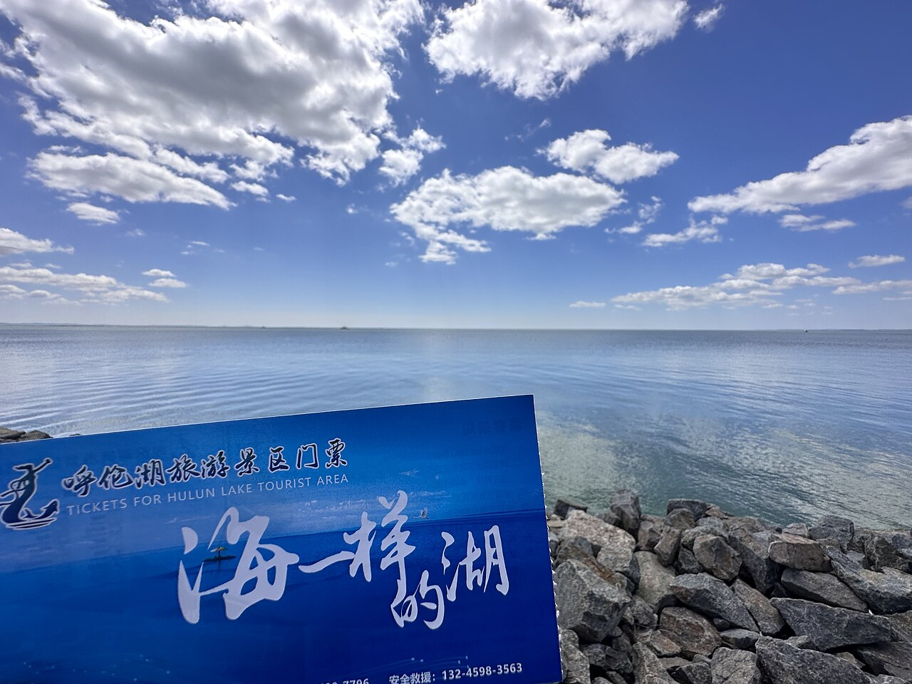

呼伦贝尔是中国保存最完好的草原之一。莫日格勒河的九曲蜿蜒、额尔古纳湿地的中俄边境、满洲里的俄式风情——这里的天际线低而辽阔，适合把节奏放慢，在蒙古包里看一次草原日出。6–8 月是最佳季节，冬季则可体验那达慕与冰雪那达慕。
Photo Essay
沿途影像


Highlights
不可错过
- 莫日格勒河
- 额尔古纳湿地
- 白桦林
- 满洲里国门
Itinerary
途经站点
1
海拉尔0
呼伦贝尔门户
2
额尔古纳200
湿地与白桦林
3
室韦350
中俄边境小镇
4
满洲里500
俄式风情
5
海拉尔1,000
环线返回
EV Tips
新能源出行提示
驾驶腾势 N7 等纯电 SUV 出发前，请特别注意以下事项：
- 海拉尔、满洲里有快充
- 草原深处充电站少，出发前满电
- 夏季蚊虫多，注意车内通风